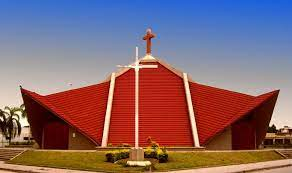

Historia
Fundación
Fue fundada el 31 de agosto de 1794 por el español Ramón García de León y Pizarro, quien la bautizó como San Ramón de la Nueva Orán por ser esa fecha el día de San Ramón Nonato, y por haber nacido él mismo en la ciudad argelina de Orán.
Iglesia Catedral
Creada el 10 de abril de 1961, por la bula "Supremi muneris", de Juan XXIII, la diócesis de Orán comprende, en la provincia de Salta, los departamentos de General José de San Martín, Orán, Rivadavia, y la parte de los departamentos de Iruya (Municipio Isla de Cañas) y Santa Victoria (Municipio Los Toldos). El primer obispo de Orán fue el franciscano Mons. Francisco de la Cruz Muguerza, designado por Juan XXIII el 12 de junio de 1961. Consagrado obispo el 24 de setiembre de ese año, tomó posesión de la sede el 21 de octubre de 1961. Falleció el 30 de abril de 1969. El segundo obispo de Orán fue Mons. Manuel Guirao, elegido por Pablo VI el 31 de octubre de 1970. Ordenado obispo el 8 de diciembre de ese mismo año, gobernó pastoralmente esta diócesis hasta su traslado a Santiago del Estero el 20 de enero de 1981. Lo sucedió Mons. Gerardo Eusebio Sueldo, elegido tercer obispo de Orán por Juan Pablo II el 30 de abril de 1982. Ordenado obispo el 3 de julio de 1982, gobernó la diócesis hasta el 15 de mayo de 1993, en que el mismo pontífice lo trasladó a la sede episcopal de Santiago del Estero como obispo coadjutor. El cuarto obispo de Orán fue Mons. Mario Antonio Cargnello, elegido por Juan Pablo II el 7 de abril de 1994. Consagrado obispo el 24 de junio de 1994, tomó posesión de la sede de Orán el 16 de julio de 1994. El 24 de julio de 1998 Juan Pablo II lo promovió a arzobispo coadjutor de Salta. Quinto obispo de Orán fue Mons. Jorge Rubén Lugones, jesuita, elegido por Juan Pablo II el 2 de julio de 1999, quien luego de su consagración episcopal, el 30 de julio, tomó posesión de la sede el 6 de agosto del mismo año; el 14 de octubre de 2008, Benedicto XVI lo trasladó como obispo de Lomas de Zamora. El sexto diocesano es el actual, Mons. Marcelo Daniel Colombo, elegido por Benedicto XVI el 8 de mayo de 2009, quien fue consagrado obispo el 8 de agosto de 2009 e inicio su gobierno pastoral el 22 de agosto de 2009.
